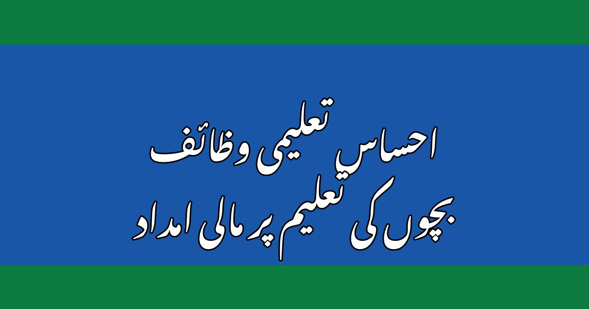

احساس تعلیمی وظائف: بچوں کے لیے مالی امداد کا مکمل طریقہ

پاکستان میں لاکھوں غریب خاندانوں کے لیے بچوں کی تعلیم جاری رکھنا ایک بڑا چیلنج ہے — کتابیں، کاپیاں، یونیفارم اور اسکول کا خرچہ اکثر والدین کی استطاعت سے باہر ہو جاتا ہے، اور نتیجہ یہ نکلتا ہے کہ بچہ اسکول چھوڑ کر کام پر لگ جاتا ہے۔ اسی مسئلے کے حل کے لیے بینظیر انکم سپورٹ پروگرام کے تحت "تعلیمی وظائف" کا پروگرام چلایا جا رہا ہے، جس کے ذریعے مستحق خاندانوں کے اسکول جانے والے بچوں کو ہر سہ ماہی نقد وظیفہ دیا جاتا ہے۔ اس مضمون میں آپ جانیں گے کہ یہ وظیفہ کسے ملتا ہے، کتنا ملتا ہے، رجسٹریشن کا طریقہ کیا ہے، اور کن کاغذات کی ضرورت پڑتی ہے۔
1۔ تعلیمی وظائف کیا ہیں؟
تعلیمی وظائف بینظیر انکم سپورٹ پروگرام (BISP) کا ایک مشروط پروگرام ہے۔ "مشروط" کا مطلب یہ ہے کہ یہ رقم صرف اس صورت میں ملتی ہے جب بچہ باقاعدگی سے اسکول جائے۔ مقصد صاف ہے: غریب خاندانوں کو مالی مدد دے کر بچوں کو اسکول میں رکھا جائے، خاص طور پر لڑکیوں کو، جن کی تعلیم اکثر پہلے قربان ہوتی ہے۔ یہی وجہ ہے کہ اس پروگرام میں لڑکیوں کا وظیفہ لڑکوں سے زیادہ رکھا گیا ہے۔ وظیفہ ماں کے نام پر جاری ہوتا ہے، اور اسی کے ساتھ ادا کیا جاتا ہے جو کفالت کی سہ ماہی قسط ملتی ہے۔
2۔ کون اہل ہے؟
اس وظیفے کے لیے چند بنیادی شرطیں ہیں، جن کا پورا ہونا ضروری ہے۔ پہلی شرط یہ ہے کہ بچے کی ماں بینظیر کفالت پروگرام کی مستحق اور فعال مستفید ہو — یعنی اسے کفالت کی قسط مل رہی ہو۔ دوسری شرط یہ ہے کہ بچے کی عمر 4 سے 22 سال کے درمیان ہو اور وہ کسی سرکاری یا رجسٹرڈ نجی اسکول میں داخل ہو۔ تیسری شرط یہ ہے کہ بچے کا نادرا سے جاری شدہ بے فارم (CRC) بنا ہوا ہو۔ اور سب سے اہم شرط یہ ہے کہ بچے کی اسکول میں حاضری کم از کم 70 فیصد ہو — حاضری کم ہونے پر وظیفہ رک سکتا ہے۔
3۔ وظیفے کی رقم کتنی ہے؟
وظیفے کی رقم بچے کی جماعت کے لحاظ سے طے ہوتی ہے، اور ہر سہ ماہی (تین مہینے بعد) ادا کی جاتی ہے۔ پرائمری جماعتوں (پہلی سے پانچویں) میں لڑکے کو 1,500 روپے اور لڑکی کو 2,000 روپے فی سہ ماہی ملتے ہیں۔ سیکنڈری جماعتوں (چھٹی سے دسویں) میں لڑکے کو 2,500 روپے اور لڑکی کو 3,000 روپے ملتے ہیں۔ ہائر سیکنڈری (گیارہویں اور بارہویں) میں لڑکے کو 3,500 روپے اور لڑکی کو 4,000 روپے فی سہ ماہی دیے جاتے ہیں۔ اس کے علاوہ پہلی بار داخلے پر بچے کو ایک مرتبہ کا داخلہ بونس بھی دیا جاتا ہے — پرائمری میں 3,000 روپے۔ یاد رکھیں، یہ شرحیں وقتاً فوقتاً نظرثانی کے تابع ہوتی ہیں، اس لیے تازہ ترین رقم ہمیشہ قریبی BISP دفتر سے تصدیق کر لیں۔
4۔ رجسٹریشن کا طریقہ — قدم بہ قدم
رجسٹریشن کا طریقہ سادہ ہے، مگر اس میں اسکول اور BISP دفتر دونوں کا کام شامل ہے۔ پہلے مرحلے میں بچے کا اسکول سے ایک فارم لیں — عام طور پر اسے "انرولمنٹ سلپ" کہا جاتا ہے — جس پر اسکول انتظامیہ بچے کے داخلے کی تصدیق کرتی ہے۔ دوسرے مرحلے میں یہ فارم بچے کے بے فارم کی کاپی اور ماں کے شناختی کارڈ کی کاپی کے ساتھ قریبی بینظیر انکم سپورٹ پروگرام کے تحصیل دفتر میں جمع کروائیں۔ تیسرے مرحلے میں دفتر آپ کی درخواست کی تصدیق کرتا ہے، اور منظوری کے بعد بچے کا نام تعلیمی وظائف کے نظام میں شامل ہو جاتا ہے۔ اس کے بعد بچے کا وظیفہ ماں کی کفالت قسط کے ساتھ ہی آنا شروع ہو جاتا ہے۔ رجسٹریشن کے لیے کوئی آن لائن فارم یا موبائل ایپ نہیں ہے — یہ کام صرف BISP دفتر کے ذریعے ہوتا ہے۔
5۔ درکار کاغذات
دفتر جانے سے پہلے یہ کاغذات تیار رکھیں تاکہ بار بار چکر نہ لگانے پڑیں:
- ماں کا اصل شناختی کارڈ اور اس کی ایک فوٹو کاپی
- بچے کا نادرا بے فارم (CRC) — اصل اور کاپی
- اسکول سے تصدیق شدہ انرولمنٹ سلپ / داخلہ فارم
- بچے کا اسکول کا ریکارڈ (اگر اسکول مانگے)
- ماں کا وہ موبائل نمبر جو BISP میں رجسٹرڈ ہو
اگر بچے کا بے فارم ابھی نہیں بنا، تو پہلے نادرا دفتر سے بے فارم بنوائیں — اس کے بغیر رجسٹریشن ممکن نہیں۔ بے فارم بنوانے کا طریقہ ہماری ویب سائٹ پر الگ مضمون میں موجود ہے۔
6۔ قسط کیسے چیک کریں؟
وظیفے کی قسط کا اسٹیٹس جاننے کے کئی طریقے ہیں۔ سب سے آسان طریقہ یہ ہے کہ ماں اپنے رجسٹرڈ موبائل نمبر سے اپنا شناختی کارڈ نمبر 8171 پر ایس ایم ایس کرے — جواب میں اہلیت اور قسط کی معلومات مل جاتی ہیں۔ دوسرا طریقہ یہ ہے کہ 8171 ویب پورٹل پر شناختی کارڈ نمبر درج کر کے معلومات دیکھی جائیں۔ تیسرا اور سب سے یقینی طریقہ یہ ہے کہ قریبی BISP تحصیل دفتر جا کر عملے سے پوچھا جائے — خاص طور پر اگر قسط رکی ہوئی ہو یا رقم میں فرق آ رہا ہو۔ نوٹ کریں کہ وظیفہ کفالت کی قسط کے ساتھ ہی آتا ہے، اس لیے دونوں کی ادائیگی کا شیڈول ایک ہی ہوتا ہے۔
7۔ عام مسائل اور ان کا حل
بہت سے والدین کو چند عام مسائل کا سامنا ہوتا ہے۔ پہلا مسئلہ: وظیفہ شروع ہونے میں تاخیر — عام طور پر منظوری کے بعد پہلی قسط آنے میں ایک سہ ماہی لگ سکتی ہے، اس لیے گھبرانے کی ضرورت نہیں۔ دوسرا مسئلہ: حاضری کم ہونے پر وظیفہ رکنا — اس کا حل صرف یہ ہے کہ بچے کی حاضری 70 فیصد سے اوپر رکھی جائے، اور اسکول سے حاضری کا ریکارڈ درست کروایا جائے۔ تیسرا مسئلہ: بچے کے اسکول تبدیل کرنے پر وظیفہ رکنا — نئے اسکول میں داخلے کے بعد نئی انرولمنٹ سلپ دوبارہ BISP دفتر میں جمع کروانا ضروری ہے۔ چوتھا مسئلہ: ماں کا موبائل نمبر تبدیل ہونا — نیا نمبر فوراً BISP دفتر میں اپ ڈیٹ کروائیں، ورنہ ایس ایم ایس اطلاع اور تصدیق رک سکتی ہے۔
احساس تعلیمی وظائف ان خاندانوں کے لیے ایک قیمتی سہولت ہے جو چاہتے ہیں کہ ان کے بچے پڑھ لکھ کر بہتر مستقبل بنائیں۔ اہلیت کی شرطیں پوری کریں، کاغذات مکمل رکھیں، بچے کی حاضری یقینی بنائیں، اور یہ مالی مدد آپ کے بچے کی تعلیم کا سہارا بن سکتی ہے۔ آج ہی اپنے بچے کی رجسٹریشن کی حالت معلوم کریں — ہو سکتا ہے آپ کا بچہ پہلے سے ہی اس وظیفے کا حقدار ہو۔ اللہ تعالیٰ آپ کے بچوں کی تعلیم میں برکت دے۔